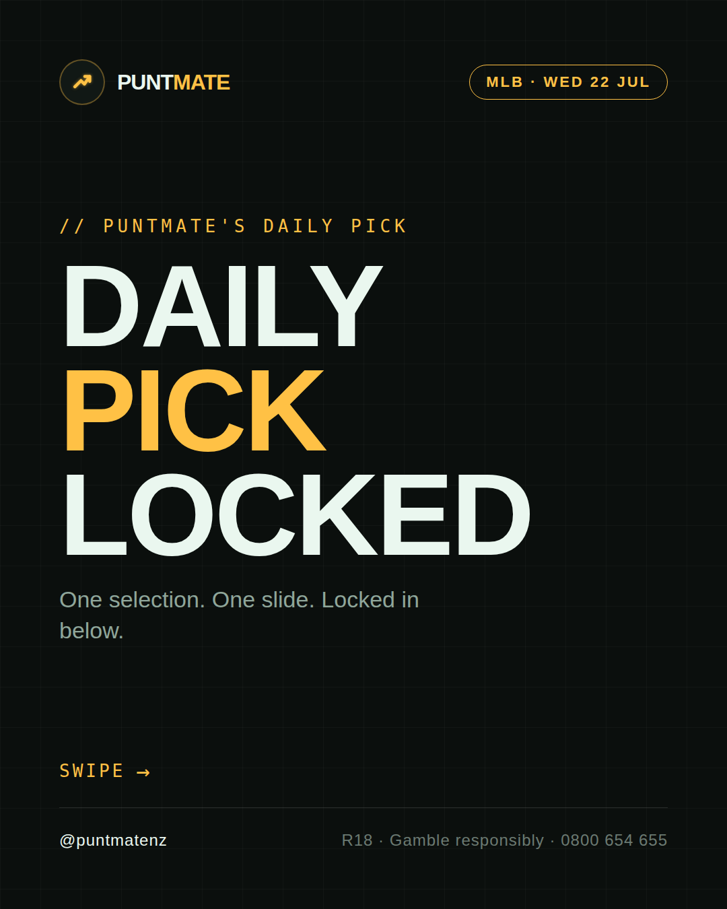
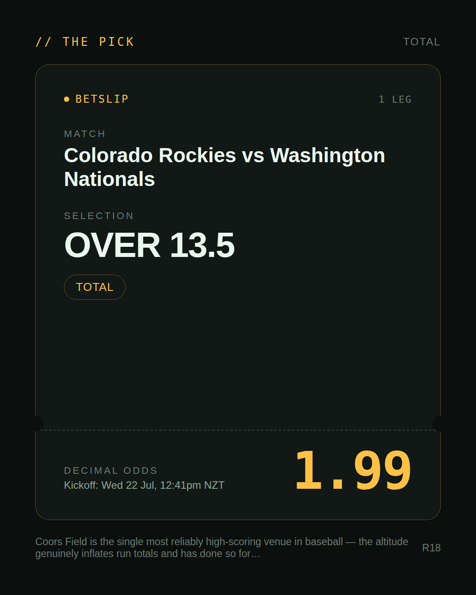
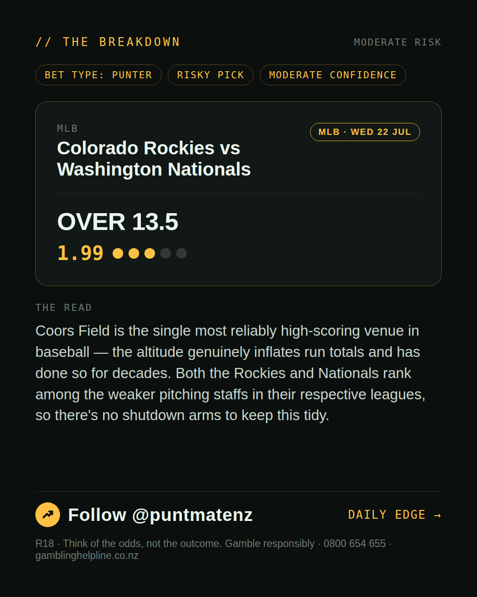
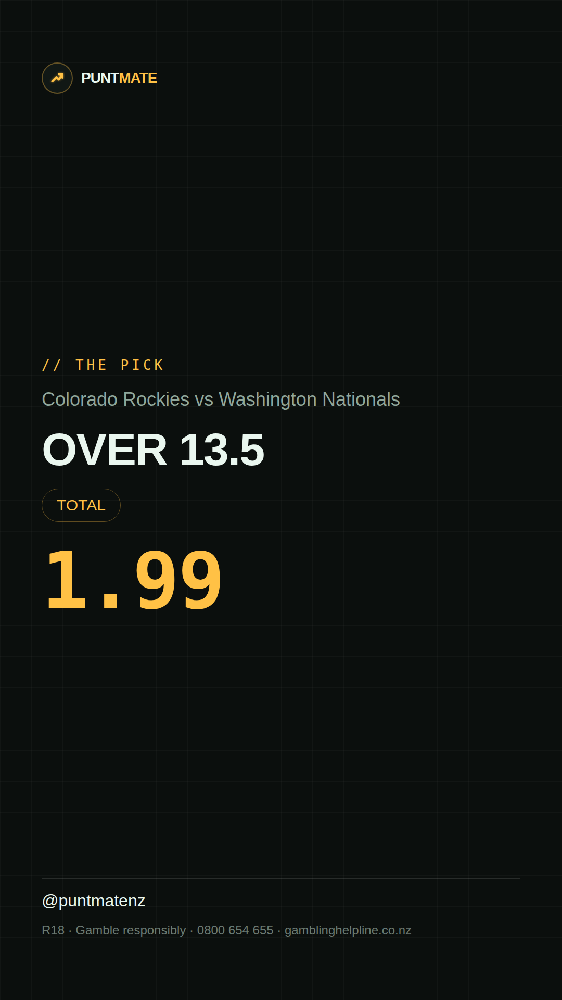

*🎯 PUNTMATE NZ — MLB* 🏟 Colorado Rockies vs Washington Nationals *PICK:* OVER 13.5 *ODDS:* 1.99 (Total) *BET TYPE: PUNTER* _Coors Field is the single most reliably high-scoring venue in baseball — the altitude genuinely inflates run totals and has done so for decades. Both the Rockies and Nationals rank among the weaker pitching staffs in their respective leagues, so there's no shutdown arms to keep this tidy._ ────────────────── 📲 Join Telegram for daily picks R18 · Gamble responsibly · Problem Gambling Foundation NZ: 0800 664 262
🎯 MLB — Colorado Rockies vs Washington Nationals OVER 13.5 @ 1.99 (Total) BET TYPE: PUNTER Solid touch here. Not a lock, but the value's real and the form backs it up. Coors Field is the single most reliably high-scoring venue in baseball — the altitude genuinely inflates run totals and has done so for decades. Both the Rockies and Nationals rank among the weaker pitching staffs in their respective leagues, so there's no shutdown arms to keep this tidy. Follow for daily value picks → @puntmatenz Problem Gambling Foundation NZ: 0800 664 262 #PuntmateNZ #SportsBetting #NZTAB #MLB
| has_pick | True |
| pick_id | 2026-07-21_Colorado_Rockies_vs_Washington_Nationals |
| run_id | 29876534970 |
| generated_at | 2026-07-21T23:17:23.257558+00:00 |
| post_date | 2026-07-21 |
| match | Colorado Rockies vs Washington Nationals |
| sport | baseball_mlb |
| sport_label | MLB |
| market | Total |
| selection | OVER 13.5 |
| odds | 1.99 |
| bet_type | PUNTER_BET |
| bet_type_label | BET TYPE: PUNTER |
| bet_type_reason | Solid touch here. Not a lock, but the value's real and the form backs it up. Coors Field is the single most reliably high-scoring venue in baseball — the altitude genuinely inflates run totals and has done so for decades. Both the Rockies and Nationals rank among the weaker pitching staffs in their respective leagues, so there's no shutdown arms to keep this tidy. |
| classification | RISKY_PICK |
| risk | RISKY_PICK |
| confidence | MODERATE |
| confidence_label | MODERATE |
| final_explanation | Coors Field is the single most reliably high-scoring venue in baseball — the altitude genuinely inflates run totals and has done so for decades. Both the Rockies and Nationals rank among the weaker pitching staffs in their respective leagues, so there's no shutdown arms to keep this tidy. |
| public_caution | Keep this one light — the value's there but so is the uncertainty. |
| theme | night |
| carousel_paths | ['data/review/2026-07-21_Colorado_Rockies_vs_Washington_Nationals/cover.png', 'data/review/2026-07-21_Colorado_Rockies_vs_Washington_Nationals/tip.png', 'data/review/2026-07-21_Colorado_Rockies_vs_Washington_Nationals/breakdown.png'] |
| carousel_urls | ['https://raw.githubusercontent.com/kingofthecastle24/puntmate/main/data/cards/2026-07-21_Colorado_Rockies_vs_Washington_Nationals_night_1_cover.png', 'https://raw.githubusercontent.com/kingofthecastle24/puntmate/main/data/cards/2026-07-21_Colorado_Rockies_vs_Washington_Nationals_night_2_tip.png', 'https://raw.githubusercontent.com/kingofthecastle24/puntmate/main/data/cards/2026-07-21_Colorado_Rockies_vs_Washington_Nationals_night_3_breakdown.png'] |
| story_path | data/review/2026-07-21_Colorado_Rockies_vs_Washington_Nationals/story.png |
| story_url | https://raw.githubusercontent.com/kingofthecastle24/puntmate/main/data/cards/2026-07-21_Colorado_Rockies_vs_Washington_Nationals_night_story.png |
| intended_platforms | ['telegram', 'instagram_feed', 'instagram_story', 'facebook'] |
| workflow_state | GENERATED |
| has_punter_multi | False |
| has_gambler_multi | False |
| has_degenerate_multi | False |